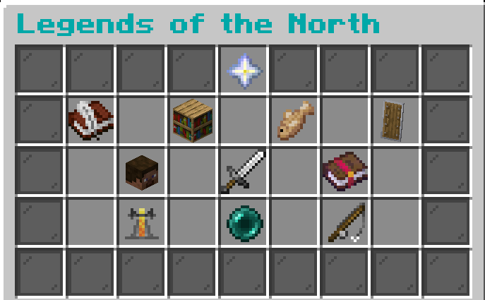
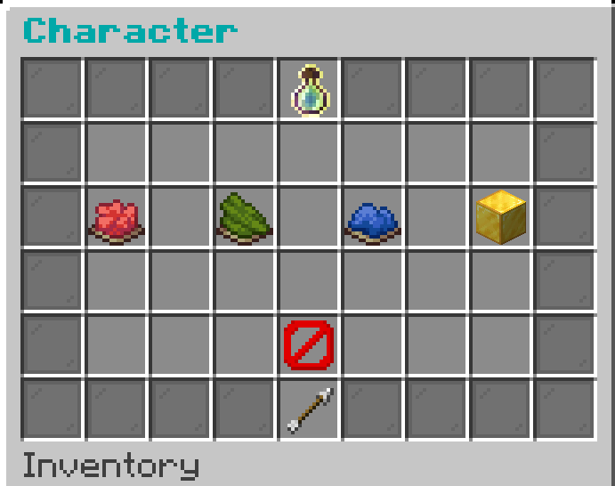
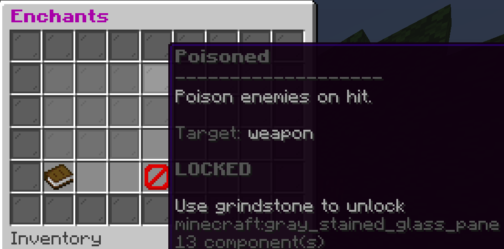
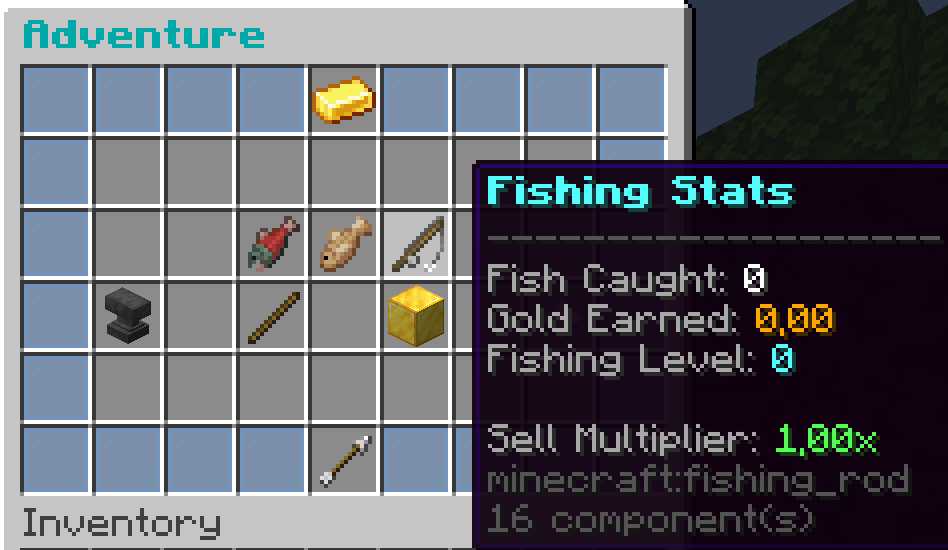
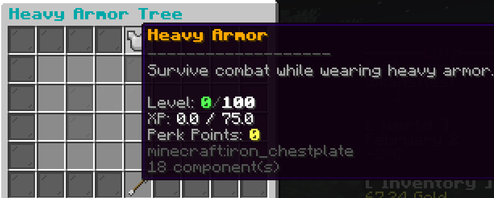
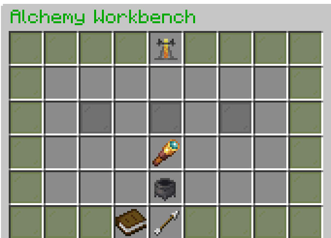

Character progression
Levels, Health, Stamina, Magicka, and character-focused growth.
There are many Minecraft RPG plugins, and hundreds of them appear every single year. But LOTN is different. Skyrim-inspired plugin for newest versions of Minecraft will add to you RPG server even more functions and things to do.
It is still in Early Access. Some parts are done, some are just ideas. But every single update, this plugin is bigger and better.
Levels, Health, Stamina, Magicka, and character-focused growth.
Upgrade your skills in fight, damage, block, or adventure.
Disenchant and learn effects or make your own healing potion.
Fish types, sizes, weights, rarities, and economy.
Main quest, achievements, side quests, and exploration goals.
Temperature, seasons, injuries, weight, and fast travel.






Loading the latest GitHub release…
A look at planned updates and features. These are ideas, not promises; feedback may help shape what comes next.
No, all EA versions will stay CS.
Absolutely, but make backup before testing. EA versions can make problems.
No.
Yes, as a tester. Check team page to learn more.